Bringing back the machine room: rebuilding a PDP-11/70 I first met in 1984
I grew up with Soviet PDP-11 clones. Thirty years later I built a PDP-11/70 emulator in the browser to get that machine room feeling back — and this is what it cost.
Every programmer past forty goes through this crisis sooner or later. Some buy a motorbike. Some take refuge in functional programming. And then you turn fifty, and you start remembering your childhood.
Mine was a good one, as childhoods go. The smell of ozone. The blinking lamps on the operator's panel of Soviet DEC clones — SM-4 and SM-1420, the first live computers I ever saw. And the first love that came with them: the C language, on an ancient machine running an even more ancient OS. That love is forty years old now. Naturally, I wanted my 1984 back.
Except that retro-computing today is a discipline for the strong-willed. To merely touch Unix V5 or RT-11 under a classic SIMH you have to: download the emulator, hunt disk images through half-dead FTP archives, write a config file a kilometre long, and then find yourself staring at a bleak black window from a standard Windows terminal.
Where is the fan noise? Where is the teletype hammering loud enough to make your ears ring? Where, damn it, is the romance?
So I built my own emulator — yaPDP (Yet Another PDP-11). And I built it so that every decision in it would be a deliberate one, rather than "it ended up this way because I found a snippet on Stack Overflow that some AI generated for me."
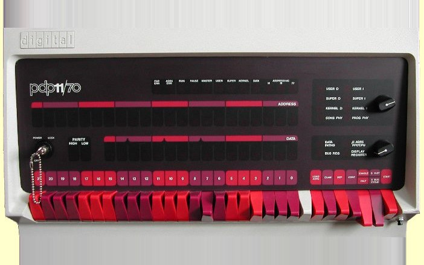

Twenty data switches, the address lamps above them, and the rotary knobs an operator actually turned. DEC's PDP-11/70 panel is the part most emulators skip — and the part you can see above, in the photograph, is what the second picture had to answer to.
What an SM-4 was, if you never saw one
For anyone who missed the ES EVM and SM EVM era, a short introduction.
The USSR had its own "Small Computer System" — the SM EVM family. The early SM-1 and SM-2 were machines unto themselves, but from SM-3 and SM-4 onwards (designed at INEUM), Soviet industry took a familiar path: reverse engineering, and then copying outright, the PDP-11 architecture from Digital Equipment Corporation.
SM-4 (1979) was the equivalent of a PDP-11/40. Enormous racks, the size of a couple of wardrobes, needing their own air-conditioned room. Clocked around 1–2 MHz, up to 256 KB of RAM (the base models were smaller — 128 KB of magnetic core memory), and it carried the IMC bus, the Soviet answer to UNIBUS.
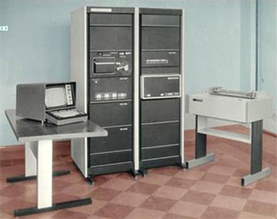
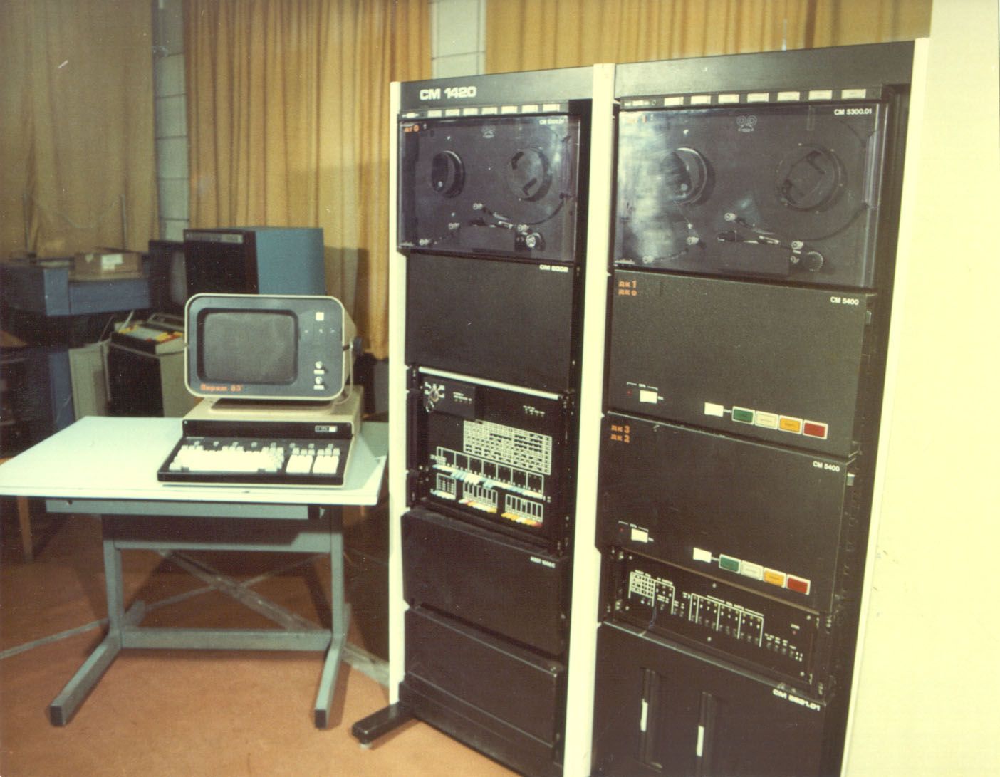
These two are what the phrase "a machine room" means to me. Not a desktop, not a terminal on a desk — a room with its own air conditioning, and cabinets you walk along.
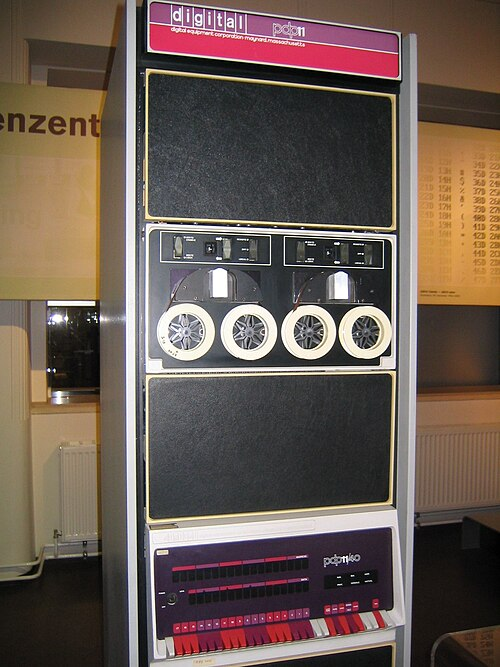
The PDP-11/40, the machine Soviet industry reverse-engineered into the SM-4. Same instruction set, same UNIBUS concept under a different name (IMK), a different plant building it.
SM-1420 (1983) was my personal favourite. A full functional analogue of the more powerful PDP-11/34 and, in part, the 11/45. It brought hardware floating point, a memory manager expanding the address space to 4 MB, and — the pinnacle of engineering ambition for its time — the ability to attach IZOT hard drives (Soviet equivalents of DEC's RK05 or RM02) holding a whole 5 or 29 megabytes. The disk itself was a heavy "saucepan" of removable platters that you had to slot carefully into the drive.
These were the machines that ran RAFOS (a clone of RT-11) and OS RV (a clone of RSX-11M). Booting a multi-user system on an SM-1420, sitting down at an alphanumeric terminal like a VTA-2000 or a DVK, starting the C compiler and writing code that drove a machine tool in a factory — that was pure adrenaline. What I wanted back was exactly that: the feeling of operating a genuine steel cabinet.
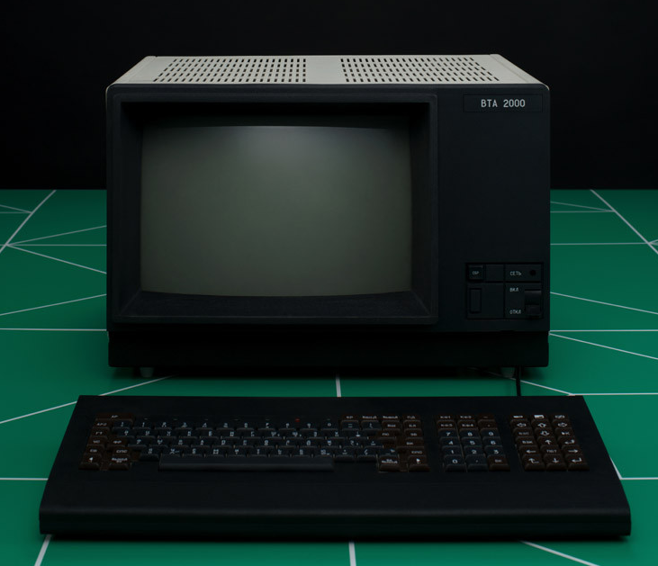
A DVK-2 — a Soviet PDP-11-compatible machine that usually worked as a terminal to an SM EVM. This is the hardware my generation learned C on.
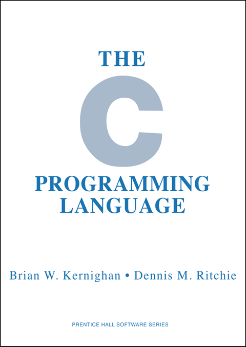
The VTA-2000 alphanumeric terminal. A green-phosphor character display that replaced the teletype in Soviet machine rooms, and the screen I sat in front of as a teenager.
Why not SIMH
"Then why write your own emulator when SIMH exists?" people asked after the first article. Fair question.
SIMH, by Bob Supnik, is the de facto standard of retro-emulation: cycle-accurate, dozens of machines under one roof, thousands of hours of collective debugging. If you want to poke at PDP-11 internals, run XXDP diagnostics or write your own OS, SIMH has no competition. Arguing otherwise would be silly; the best thing a lone developer can do is stop playing cowboy and join that community.
But start SIMH and you get a console that reproduces the hardware exactly — you can load an OS and work. What it does not give you is the immersion I was after. SIMH's community has built real tools for that (BlinkenBone's Java panels, MAME's terminal emulation), and I tried them. Getting them to work alongside SIMH cost me an evening of multi-step preparation that killed the desire to continue before I ever reached the interesting part. ROMs for the terminals I wanted had to be hunted across the internet; the one I found matched a different, more modern terminal; the whole assembly started with a great deal of creaking.
The saddest part was the absence of emulators for what I actually wanted: to dive another twenty years deeper, into the era of teletypes and paper tape, when Unix was being born — and with it the patterns we still use every day without noticing.
So the goal was to bring back the atmosphere of the machine room itself. Deliberately fewer devices, but working at the click of a link.
A teletype, not an xterm
I am a C enthusiast, and I wanted to work the way Kernighan and Ritchie did — that book is even part of the emulator's photographic backdrop. Hence the choice of terminals: a teletype, and my own hand-written VT52.
A sensible person would reach for xterm.js, and I probably will when I need a VT100. But for now I want the feeling of hardware, not a pixel-perfect terminal.
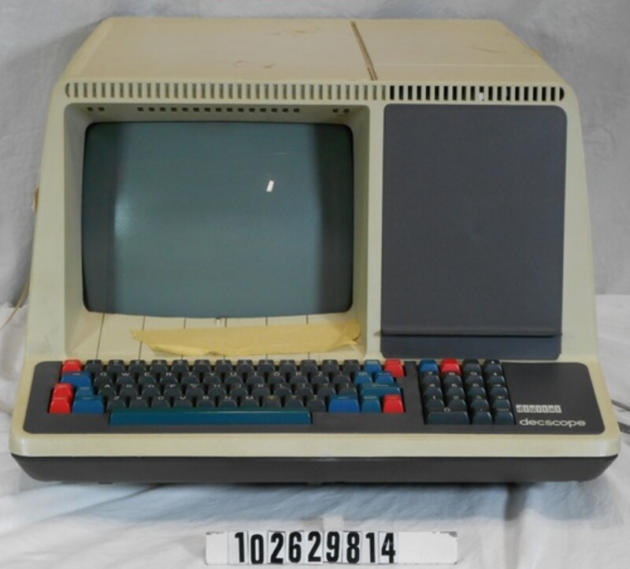
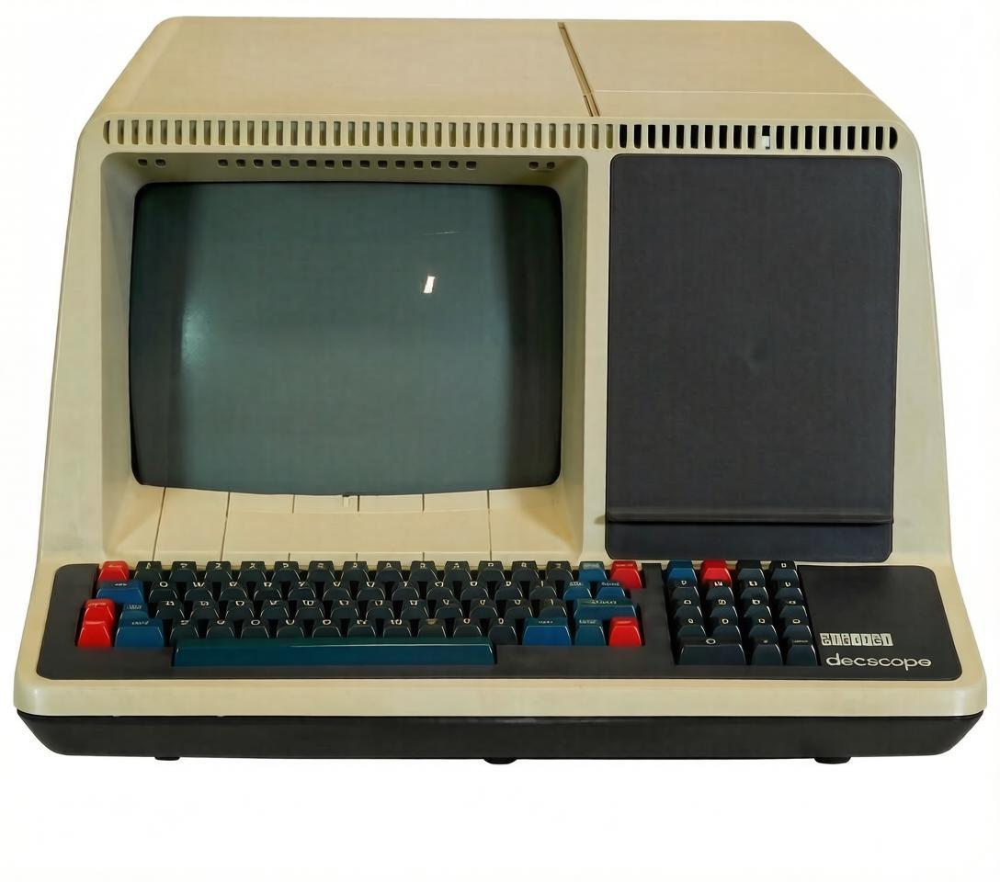
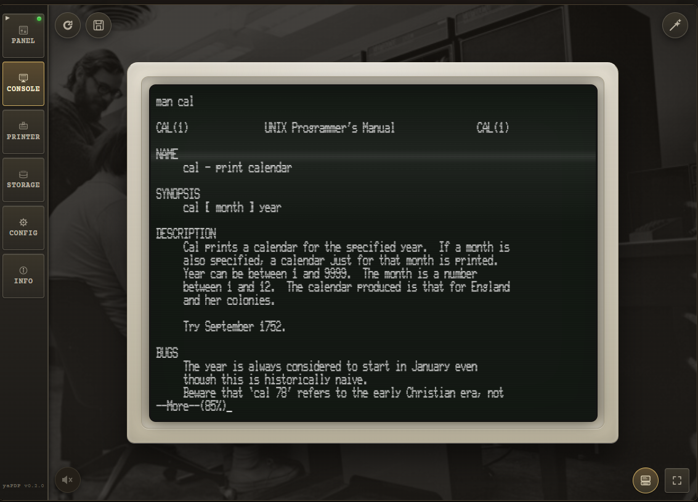

This is why the terminal in yaPDP is not a lookalike. It was not modelled after a VT52 in the rough sense of the word — it was traced from that photograph, so the cabinet, the 4:3 tube and the character-cell attributes the real hardware had are the same lines, carried over by hand.
The punch, honest down to the last hole
Once there is a teletype, you want it as faithful as it can be. That is where the paper-tape punch came from — it works much the way the original did, and the tapes it exports load perfectly into a PDP-11 tape reader, simulated or (if any are still alive) real.
The teletype itself went the same way as the VT52: it began as a photograph, then a cut-out, then a tracing, and only then became hardware you can type at.
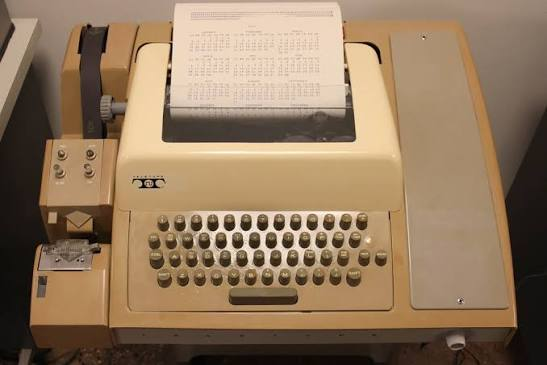
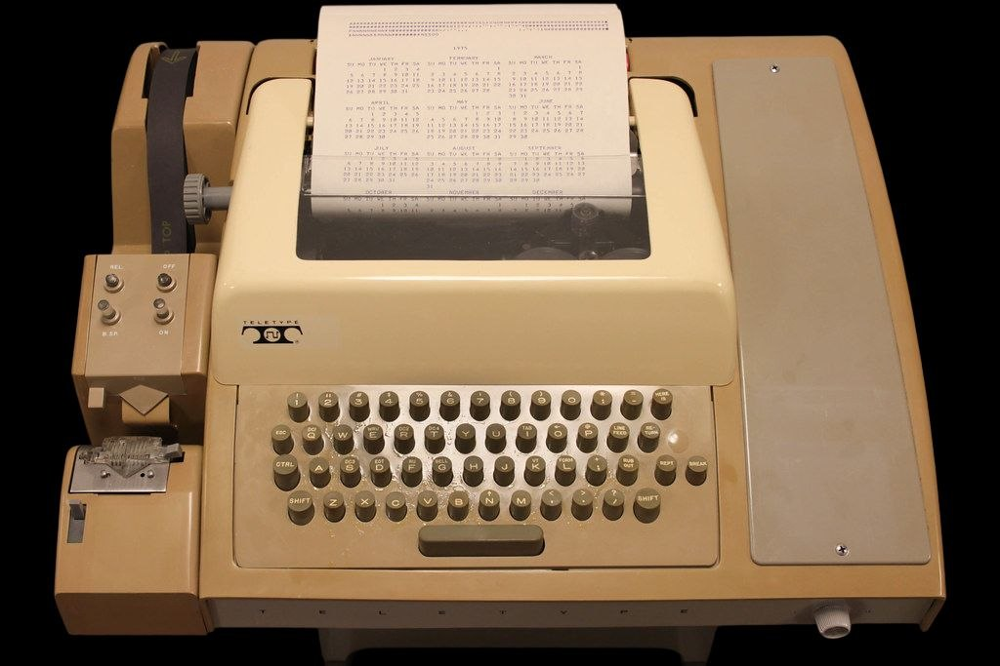
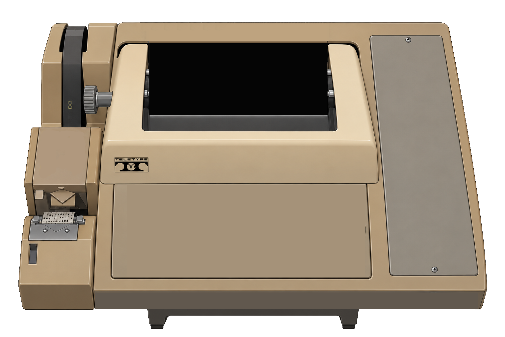

Getting there took fixing it first: the original emulator's punch was minimal — just enough to start a bootloader. RT-11 could not see it, let alone work with it. And once tapes could be read, I naturally wanted to punch them too. That had to be written from scratch.
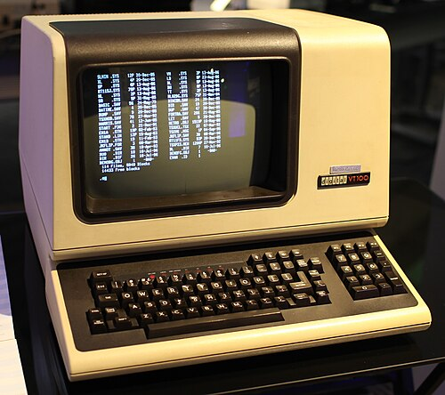
Paper tape: eight tracks of data, and the smaller five-track format the teletype itself used. yaPDP punches and reads both, and a tape exported from it loads into a real PDP-11 reader if you still have one.
Playing with the real operating systems of that era taught me a few things I had only read about:
- where the pipe came from. Kernighan and Pike originally punched one program's output onto tape and fed it into the next program's input — the software version of the same idea came later.
- why Unix V5 is so quiet, and why its utilities say nothing at all when everything is fine. Loading 2.11 BSD takes long enough to go make tea — and drink it.
- why every bit and byte was counted. The memory of the hidden Unix file struck home: every character you print by accident is your own time, wasted.
The emulator that builds itself
After the modifications, the machine could exchange data with the host and rebuild its own bootstrap loader. What Paul Nankervis had built was excellent for demonstration — a bootloader, a lamp-blinking routine, a short HELP, and ODT (the DEC On-line Debugging Tool) — but it did not quite fit what I needed.
So: take the emulator I had, boot RT-11, turn Paul's boot.mac into a paper tape, load that tape into RT-11, and run the real MACRO-11 and LINK. Take the result back out and turn it into a dump embedded in JavaScript for the auto-boot path. From that moment the project started helping to develop itself.
What came of it
The main goal — an immersive simulator you want not only to work on but simply to stand next to, watching the lights run — I consider reached. The code in many places is honestly rough: assembled on weekends, at night, by the rule "if it works, don't touch it". But now there is a point to dance from: refactor, clean, improve, without adding features. Which is precisely what I intend to do.
There is one exception to "no new features": the working tape reader on the teletype. Feed it a tape, and its contents go into the machine byte by byte. That is AUTO mode — the computer accepts what is on the tape in start-stop mode; START mode is no good for this, the data just hammers into thin air and there is no time to receive it.
Conclusion
yaPDP was not built to solve modern business problems. It was built to bring back the feeling of a machine. Of a time when computers announced their thoughts by clicking relays and blinking lamps, rather than by quietly chewing memory in the background.
If you want to catch that vibe too — compile a program with the ancient K&R cc on Unix V5, or just listen to the teletype swear at you for a wrong command — you are welcome aboard.
Poke it in the browser: amesk.github.io/yaPDP Source and desktop build: github.com/amesk/yaPDP
I would be glad of your stars, your pull requests, and your nostalgic stories in the comments about what you did on those very SM machines.
2026-09-23